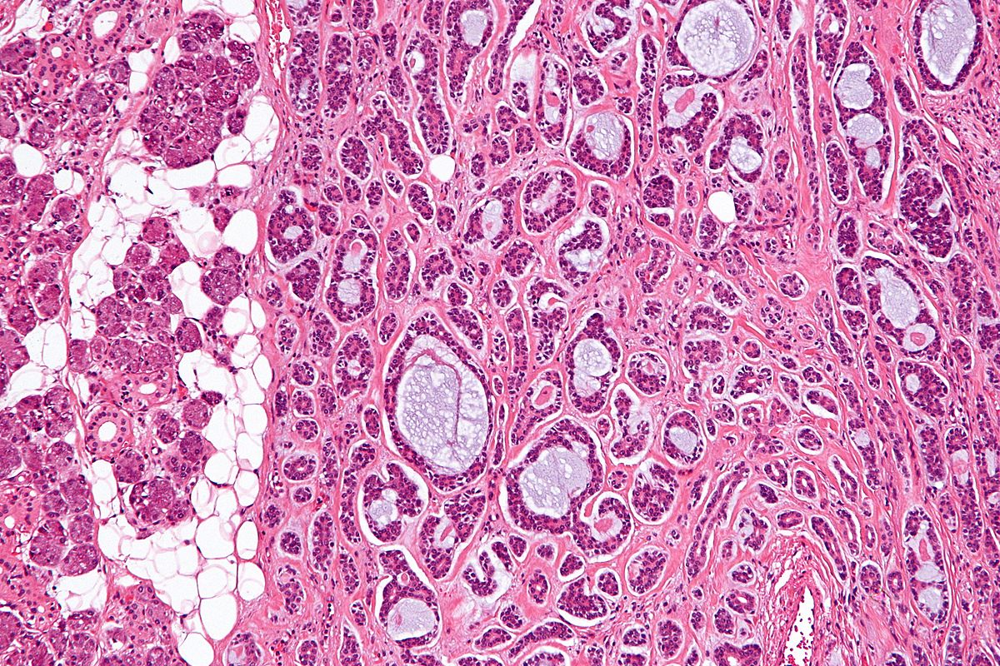

Adenoid Cystic Carcinoma
welcome to my site
BACK TO HOME

Adenoid Cystic Carcinoma
Adenoid cystic carcinoma (ACC) is an uncommon form of malignant neoplasm that arises within secretory glands, most commonly the major and minor salivary glands of the head and neck. Other sites of origin include the trachea, lacrimal gland, breast, skin, and vulva. This neoplasm is defined by its distinctive histologic appearance. Due to its slow growth, ACC has a relatively indolent but relentless course. Unlike most carcinomas, most patients with ACC survive for 5 years, only to have tumors recur and progress. Another unusual feature of ACC is that, unlike most carcinomas, it seldom metastasizes to regional lymph nodes. The lung is by far the most common site of metastasis, with the liver being the second most common site. Poor prognostic signs at the time of initial surgery are a solid growth pattern, perineural invasion of major nerves and/or positive margins after histopathologic examination.